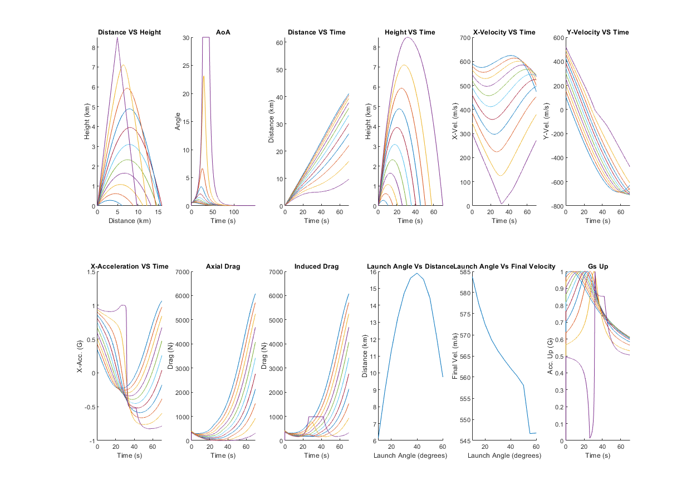

INC = 0.01;
SIM_LEN = 150;
totalPoints = floor(SIM_LEN/INC);
angles = 10:5:60;
totalAngles = numel(angles);
diameter = 0.182;
alpha_max = 30;
h = 10000;
v = 600;
mass = 200;
g = 9.81;
G = 20;
Nc = mass*g;
[t,p, density, mach, Q] = atmosModel(h,v);
sRef = pi()*(diameter/2)^2;
alpha_max_RAD = (alpha_max*pi())/180;
cnalpha = (G*mass*g)/(alpha_max_RAD*Q*sRef);
disp("CNalpha = " + string(cnalpha));
dis_x = zeros(totalAngles, totalPoints);
dis_y = zeros(totalAngles, totalPoints);
vel_x = zeros(totalAngles, totalPoints);
vel_y = zeros(totalAngles, totalPoints);
acc_x = zeros(totalAngles, totalPoints);
acc_y = zeros(totalAngles, totalPoints);
AoA_all = zeros(totalAngles, totalPoints);
aDrag_all = zeros(totalAngles, totalPoints);
iDrag_all = zeros(totalAngles, totalPoints);
aUp_all = zeros(totalAngles, totalPoints);
timeNoAir = zeros(totalAngles, totalPoints);
distanceFinal = zeros(1,totalAngles);
velFinal = zeros(1,totalAngles);
maxDistanceND = 0;
maxTimeND = 0;
for i = 1:totalAngles
gamma = angles(i);
[x_a, y_a, x_v, y_v, x_x, y_x, AoA, timeArray, timef, distancef, velf, accNBody, aDrag, iDrag, aUp] = PMwithNormalForce(cnalpha, gamma, Nc, mass, sRef, INC, totalPoints);
dis_x(i,:) = x_x;
dis_y(i,:) = y_x;
vel_x(i,:) = x_v;
vel_y(i,:) = y_v;
acc_x(i,:) = x_a;
acc_y(i,:) = y_a;
aDrag_all(i,:) = aDrag;
iDrag_all(i,:) = iDrag;
aUp_all(i,:) = aUp;
timeNoAir(i,:) = timeArray;
AoA_all(i, :) = AoA;
distanceFinal(:,i) = distancef;
velFinal(:,i) = velf;
if(distancef > maxDistanceND)
maxDistanceND = distancef;
end
if(timef > maxTimeND)
maxTimeND = timef;
end
end
fig1 = figure(1);
subPlotY = 2;
subPlotX = 6;
plotData(dis_x/1000, dis_y/1000, "Distance VS Height", "Distance (km)", "Height (km)", subPlotX, subPlotY, 1, 0, maxDistanceND/1000);
ylim([0 inf]);
plotData(timeNoAir, AoA_all, "AoA", "Time (s)", "Angle", subPlotX, subPlotY, 2, -inf, inf);
plotData(timeNoAir, dis_x/1000, "Distance VS Time", "Time (s)", "Distance (km)",subPlotX, subPlotY, 3, 0, maxTimeND);
ylim([0 inf]);
plotData(timeNoAir, dis_y/1000, "Height VS Time", "Time (s)", "Height (km)", subPlotX,subPlotY,4, 0, maxTimeND)
ylim([0 inf]);
plotData(timeNoAir, vel_x, "X-Velocity VS Time", "Time (s)", "X-Vel. (m/s)", subPlotX,subPlotY,5, 0, maxTimeND);
plotData(timeNoAir, vel_y, "Y-Velocity VS Time", "Time (s)", "Y-Vel. (m/s)", subPlotX,subPlotY,6, 0, maxTimeND);
plotData(timeNoAir, acc_x/-9.81, "X-Acceleration VS Time", "Time (s)", "X-Acc. (G)",subPlotX,subPlotY,7, 0, maxTimeND);
plotData(timeNoAir, aDrag_all, "Axial Drag", "Time (s)", "Drag (N)",subPlotX,subPlotY,8, 0, maxTimeND);
plotData(timeNoAir, iDrag_all, "Induced Drag", "Time (s)", "Drag (N)",subPlotX,subPlotY,9, 0, maxTimeND);
plotData(angles, distanceFinal/1000, "Launch Angle Vs Distance", "Launch Angle (degrees)", "Distance (km)", subPlotX, subPlotY, 10, 10, inf);
plotData(angles, velFinal, "Launch Angle Vs Final Velocity", "Launch Angle (degrees)", "Final Vel. (m/s)", subPlotX, subPlotY, 11, 10, inf);
plotData(timeNoAir, aUp_all/9.81, "Gs Up", "Time (s)", "Acc. Up (G)",subPlotX,subPlotY,12, 0, maxTimeND);
set(fig1, 'Position', [0 0 1250 1250])
CNalpha = 38.656
